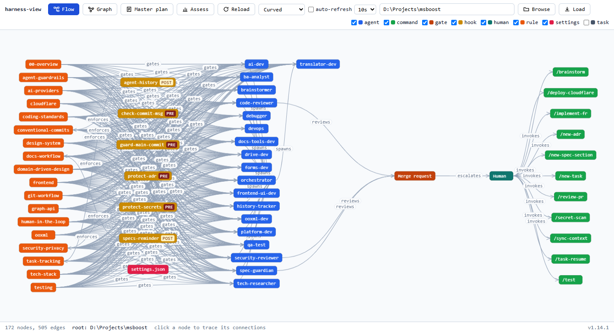
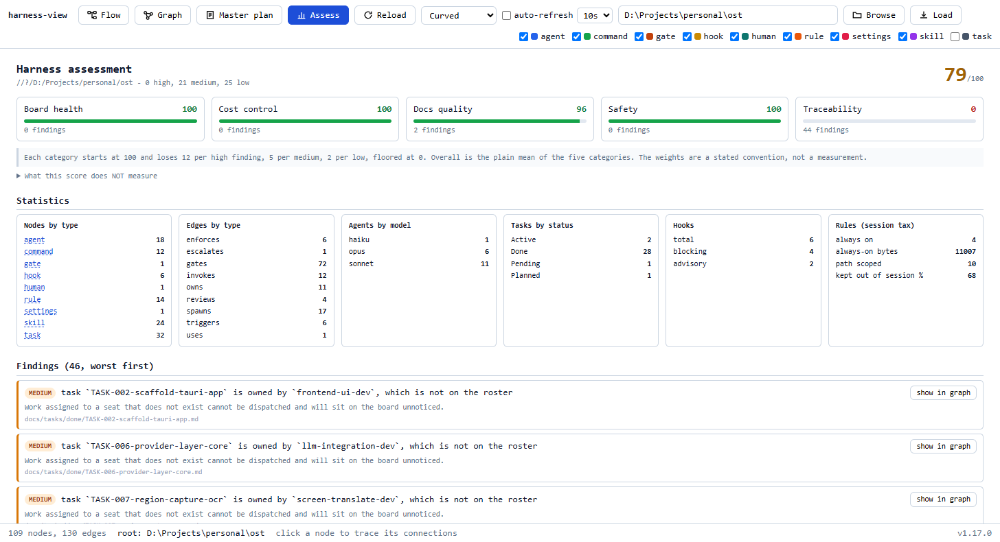

二つの Claude Code スキルと一つのビューア。一つはあなたと AI が共有できる仕様を書き、 一つはリポジトリに合わせたエージェント編成を組み立て、もう一つはその全体を可視化して任意の部分を 無効化できるようにします。
新規開発でも、既存コードベースでも、監査専用でも。安全性の下限はシェルスクリプトと 終了コードで担保されるため、モデルを入れ替えても動きません。
互いに引き継ぎ合う三つの部品です。一つ目は単独でも使えます。価値の中心は二つ目にあり、 三つ目は二つ目が宣言どおりに動いたかを確認する手段です。
持ち込まれたものを、あなたと AI の双方が読む一つの契約に変換します。記述は国際標準に沿います。
リポジトリに運用ハーネスを構築します。誰が何を、どれだけのコストで、何をしてはならないかを定めます。
ディスク上の実際のハーネスを読み取って描画します。モデルは介在しないため、ブラウザと CI の 結果が食い違うことはありません。
織機はこの仕組みの正直な比喩です。糸はもつれたまま入り、布になって出てきます。 魔法ではなく、枠があるからそうなります。

Claude Code のスキルは、適切なものが存在し、かつ適切なエージェントが到達できて初めて 役に立ちます。この二つは別々の問題であり、ハーネスも別々に扱います。
どんなスキルが存在するかを利用者が知っている必要はありません。探索はこのプロジェクトの マニフェストを読み、技術スタックを判定し、それに合うスキルを見つけます。
どのエージェントからも使われないスキルは、コンテキスト代だけ払う死荷重です。配線は選ばれた スキルを必要とするエージェントの席に接続し、その接続を記録します。
検査できないハーネスは、信用するしかないハーネスです。harness-view は
実行が書いた状態から実物を描画し、どのノードも開けるファイルです。


ここにある数値はすべて、リポジトリ内のスクリプトから得られ、あなた自身が再実行できます。 モデルの所感は一つもありません。
Opus を Haiku に入れ替えても、評価結果はバイト単位で同一です。 それがこの設計の要点で、下限はシェルスクリプトと終了コードによって強制されるため、どのモデルが 動かしているかに依存しません。安いモデルで変わるのは、書かれるコードの質とレビューの深さ、 すなわち上限であり、この評価はそれを測っていません。
スキルディレクトリに展開するだけです。次のセッションから Claude Code が認識します。
# 両方のスキル
unzip agent-harness-bootstrap.zip -d ~/.claude/skills/
# そのうえで、対象リポジトリ内で
/harness-bootstrap # ハーネスを構築する
/spec-builder # あるいは契約から始める
ビューアは Windows・macOS・Linux 向けの単体バイナリとして配布され、 ローカルの Web UI としても動作します。
harness-view serve . # localhost でハーネスを閲覧
harness-view assess . # 採点し、基準を満たさなければ非ゼロ終了
いずれも 各リリース に添付されます。チェックサムと、そのバージョンで実際に取得した評価およびベンチマーク結果も同梱されます。
| 目的 | 参照先 |
|---|---|
| 5 分で全体を通して理解する | 紹介動画（日本語と英語） |
| チームに説明する | スライド |
| 詳細なガイドを読む | README.ja.md |
| 何が強制され、何が助言に留まるかを知る | ASSESSMENT.md |
| 安全性の主張を自分で確かめる | python eval/guardrail_eval.py |
| Cursor や Codex で使う | docs/tools/ |